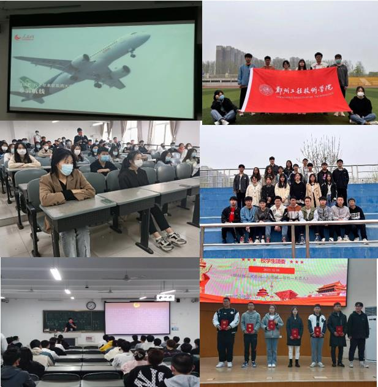
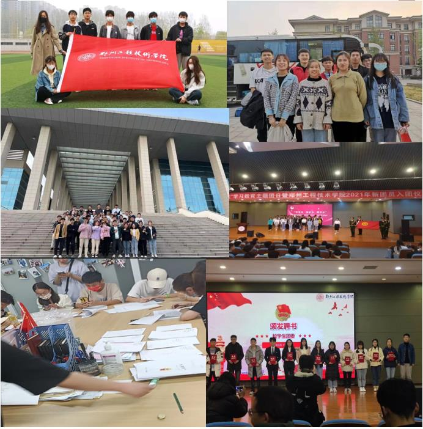
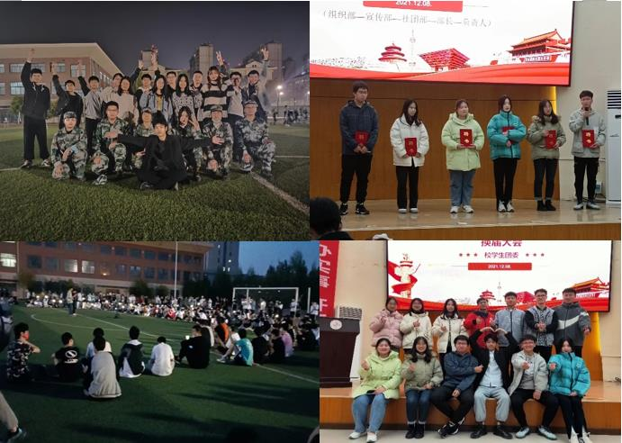
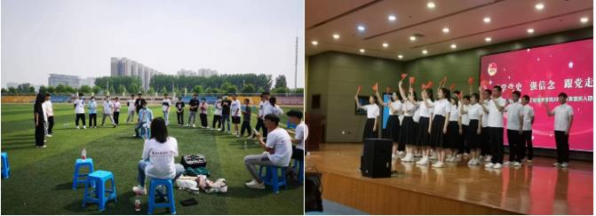

九月的风
适合想念
我为秋风按了暂停键
不妨看看校园的风景线
------------------------------------------------
这里有
思想的碰撞
这里有
灵魂的共鸣
这里有
可以为你答疑解惑的师兄师姐们
温馨的部门氛围
和你想要的舞台
------------------------------------------------
无论你想学习
新闻编写、活动策划
还是想提高社交口才能力、培养辩证思维
校学生团委应有尽有
------------------------------------------------
宣传部
我们的本职工作是研究和制定团的宣传教育和思想政治工作的计划、措施和方法。
定期开展团课并引导团课的思想内容方向，在团课期间我们负责团课的内容、纪律的监督和记录，并且为各班的表现打分。
我们积极促进校学生团委的协作与融合，努力创造出团结友善的工作环境，让身在其中的每一位成员在这里收获友谊、
收获快乐、收获元气满满的每一天。
这里充满了欢乐！

------------------------------------------------
组织部
耀眼青春，“郑攻”其中，组织部欢迎你！
组织部是校团委的书面担当，是老师与学生沟通的桥梁，担任着“枢纽”的重要位置。
组织部的工作内容是负责团费收缴工作，团员证的办理、组织关系的接转，做好团员证的年度注册，团员档案的归档；
掌握整个校区共青团组织的情况，并及时进行团员登记和团员变动情况的调查统计工作；
同时负责全校共青团员思想教育、各级团组织的建设及各级团干培养和考核，协助举行各种活动。
在这里可以通过查阅整理团籍提高自己的办事能力，与个班团委对接提高自己的交际能力......
期待在组织部遇到更好的你！

------------------------------------------------
社团部
社团部致力于服务全校的学生社团，贯彻服务为主，管理为辅的精神。创新精神也在我们之中展现的淋淋尽致 。
协助解决各社团的难题和需求。
监督各社团的日常运作；负责管理各级社团的相关事务(如社团招新、社团注册、社团活动监督、评分等工作)；
负责社长培训；定期组织召开社长大会、社长交流会，社团文化交流会等与社团相关的活动；
组织策划全校规模的社团展示活动；协同打造校园社团文化 。
是每一位热衷社团活动与想要展现自我的小伙伴们的绝佳平台。
加入我们吧！
热爱各有不同，青年本该如此，每一代逐日移山的青年，都有自己奋不顾身的热爱，
愿你能在校学生团委里找到属于自己的那一份热爱，探索新的乐趣和精彩。

------------------------------------------------
快来加入我们吧！！
------------------------------------------------
这里就是校学生团委！
里面有你想象不到的精彩
欢迎你的加入
迎面吹来徐徐秋风
你们绝对想不到这是首藏头诗！
------------------------------------------------------------------------------
风里雨里，我们在校学生团委等你！！
